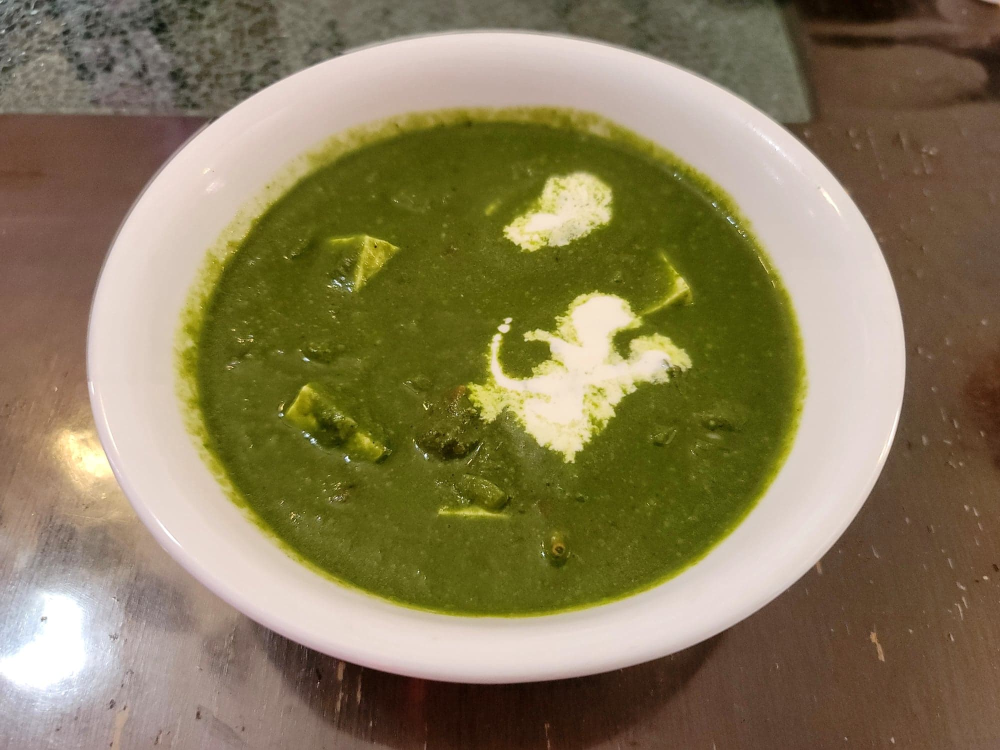

Palak Paneer

Ingredients:
Spinach:
- 1/2 tbsp Canola oil
- 3 1/2 - 4 cups (100 - 120 g) Baby spinach
- 2 Green chilies, deseeded
- 8 - 10 Cashews
- 1/4 cup Water
Palak Paneer:
- 6 oz Paneer, cubed
- 1 1/2 tbsp Ghee
- Optional: 1/8 tsp Cumin seeds
- Optional: 2 Green cardamom
- Optional: 1 inch Cinnamon stick
- Optional: 2 Cloves
- 1 Onion, diced
- 1/2 tsp Ginger, grated or Ginger paste
- 1/2 tsp Garlic, grated or Garlic paste
- 2 small Tomatoes, diced OR 1/2 Tomato purée
- 3/4 tsp Salt
- 1/2 tsp Garam masala
- 3/4 cup Water
- 1/2 tsp Kasuri methi
- Optional: Heavy cream, to preference
Instructions:
- Begin by preparing the spinach. Heat the oil in a large saucepan over medium heat. Add in the spinach, chilies, and cashews. Sauté until the spinach has completely wilted, about 3-5 minutes.
- Then add transfer to a blender with the water and blend until very smooth. Reserve.
- To the same saucepan, heat the ghee over medium heat. If using the whole spices, add to the saucepan and fry until they begin to sizzle, about 1-3 minutes.
- Add in the onions and sauté until transparent, about 5-7 minutes. Then add in the garlic and ginger and sauté for another 2 minutes.
- Add in the tomatoes and salt. Sauté for about 5-7 minutes, or until the tomatoes become mushy. Add the garam masala and sauté for another 2 minutes, or until fragrant.
- Stir in the water and let come to a simmer over medium heat. Let cook for about 5-7 minutes or until the onions have softened.
- Reduce the heat to low and stir in the blended spinach and the kasuri methi. Bring to a simmer and let cook for about 2-3 minutes.
- Stir in the paneer and then remove from the heat. Garnish with some heavy cream to taste. Serve immediately.